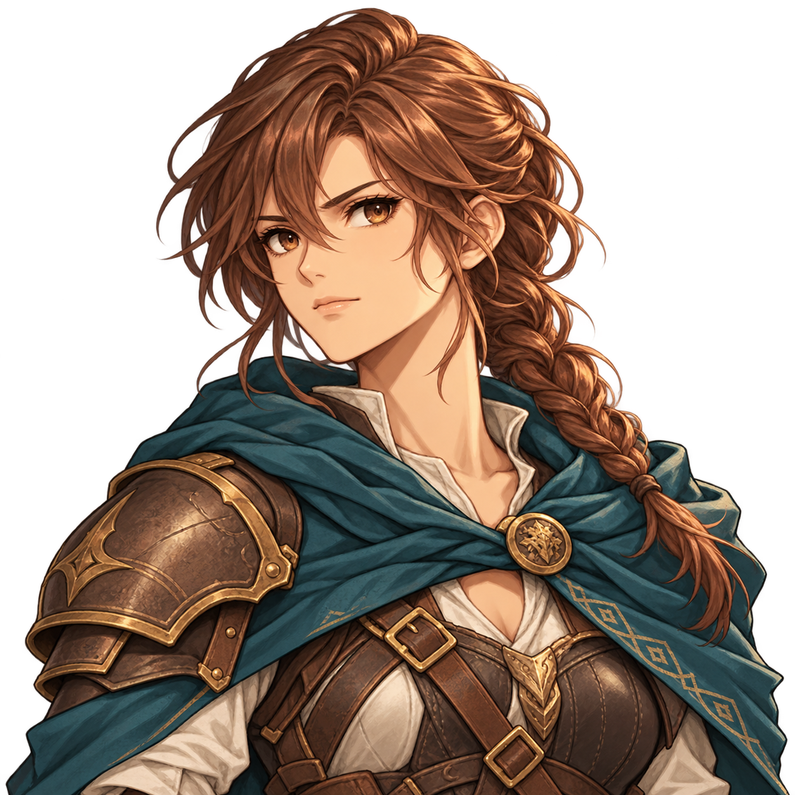
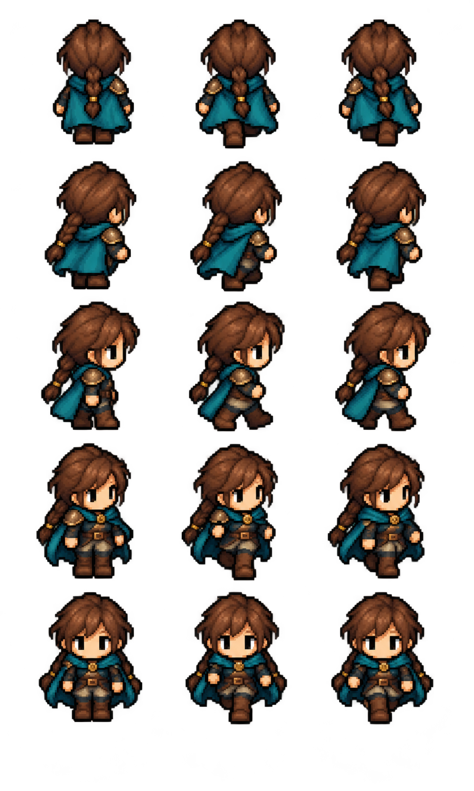
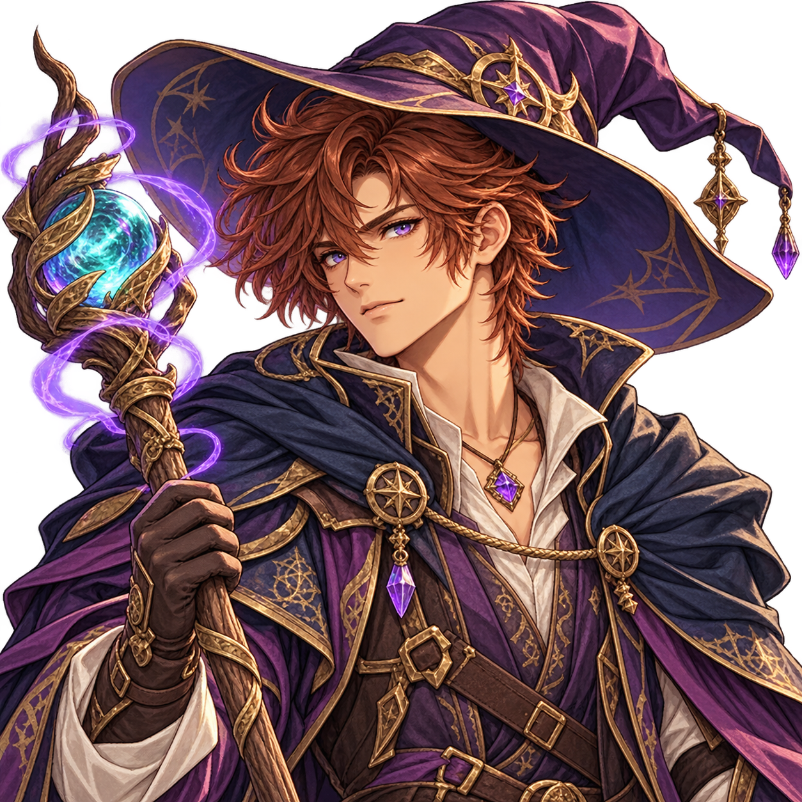
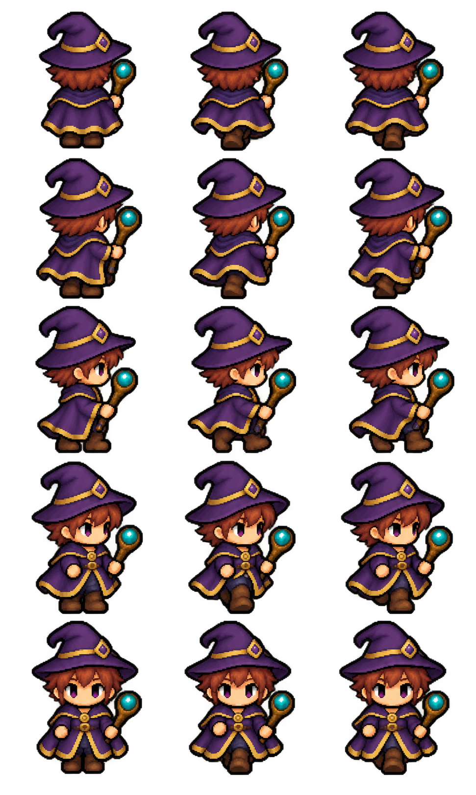
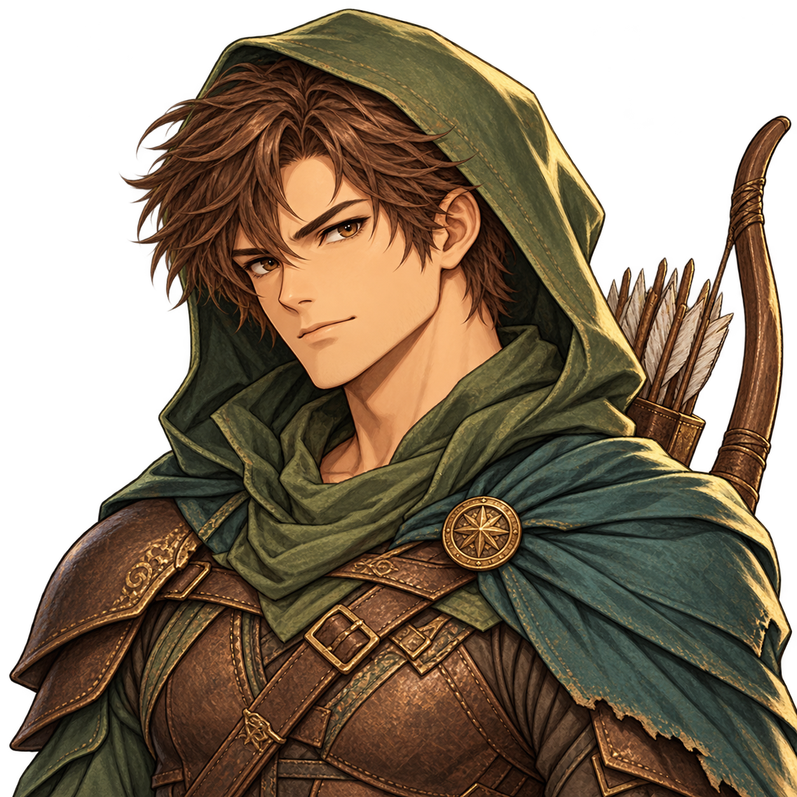
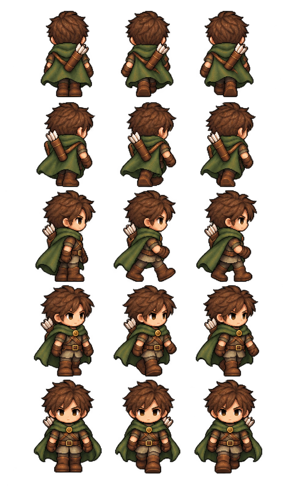

Une Guerrière, un Mage et un Éclaireur avec portraits et sprites de marche.
Comprendre ce que cela implique
Trois variantes visuelles sont préparées : une Guerrière, un Mage masculin et un Éclaireur masculin, avec portraits et planches de marche. Ces assets sont consultables dans le wiki ; leur sélection en partie reste à raccorder. Ils ne modifient aucune règle ni validation serveur.
Chaque planche présente le même personnage dans cinq directions et trois poses. Les quinze silhouettes sont des poses d’animation, sans effet sur les effectifs ou les déplacements officiels.






Détails de référence
Texte de référence mis en forme et conservé dans l’historique de cet article. Les paragraphes datés peuvent décrire une évolution ou une étape antérieure.
Trois variantes sont préparées : une Guerrière, un Mage masculin et un Éclaireur masculin. Chaque variante possède un portrait illustré et une planche de quinze sprites sur fond transparent, dans le style des héros existants.
Les fichiers sont conservés séparément dans app/assets/portraits/ et app/assets/heroes/, avec les identifiants warrior-female, mage-male et ranger-male et le suffixe v1. Les portraits portent le préfixe hero- et les planches le suffixe jrpg-walk.
Les planches présentent trois colonnes (immobile, pas gauche, pas droit) et cinq lignes (dos N, diagonale NE, profil E, diagonale SE, face S). Les vues ouest peuvent utiliser les miroirs des vues est comme les sprites actuels.
Statut
Assets préparés et consultables dans output/hero-variants/index.html. La sélection de ces variantes en partie n’est pas encore raccordée. Les fichiers actuels et leur sélection par classe restent conservés. Ces visuels ne modifient aucune caractéristique, règle, action ou validation du serveur, en GPS comme sur carte fictive.
Création
Visuels générés avec l’outil intégré imagegen à partir des portraits et planches existants comme références de style et de costume. Les prompts exacts sont conservés dans output/hero-variants/prompts.json.